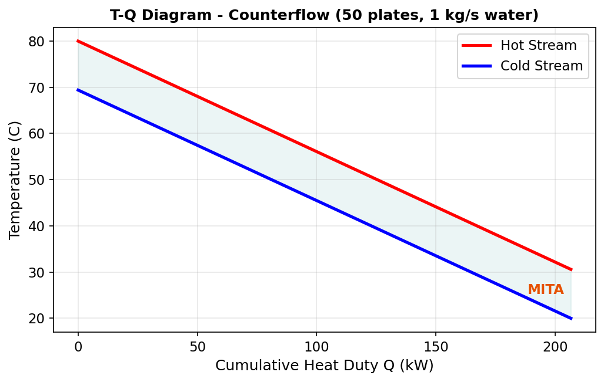

Design Mode¶
Overview¶
Design Mode is the primary calculation mode for the Plate Heat Exchanger unit operation. Given the plate geometry and inlet stream conditions (temperature, pressure, flow rate, composition), the PHE calculates the complete thermal-hydraulic performance: outlet temperatures, total heat transferred, overall heat transfer coefficient, pressure drops on both sides, and thermal efficiency.
This mode answers the question: "For a given exchanger geometry and set of inlet conditions, what is the thermal performance?"
How It Works¶
The design calculation follows this sequence:
- Read inlet conditions — Retrieve temperature, pressure, mass flow rate, and fluid properties (density, viscosity, thermal conductivity, heat capacity) from both hot-side and cold-side inlet streams.
- Compute geometry — Calculate the single-plate heat transfer area from plate width, plate height, and the enlargement factor. Determine the number of channels on each side and the hydraulic diameter from plate spacing.
- Calculate Reynolds numbers — Determine the channel velocity and Reynolds number for each side based on mass flow rate, number of channels, and channel cross-sectional area.
- Evaluate heat transfer coefficients — Compute the convective heat transfer coefficient (HTC) for each side using plate heat exchanger correlations that account for the chevron angle and Reynolds number.
- Compute overall U — Assemble the overall heat transfer coefficient from the hot-side HTC, cold-side HTC, plate conduction resistance (thickness / conductivity), and fouling resistances on both sides.
- Determine heat duty — Using the effectiveness-NTU method or LMTD approach (depending on flow arrangement), calculate the total heat transferred, outlet temperatures, LMTD, and thermal efficiency.
- Apply heat leak — If a non-zero heat leak is specified, adjust the energy balance by splitting the leak equally between the hot and cold sides.
- Calculate pressure drops — Compute the frictional pressure drop through the plate channels for both hot and cold sides.
- Build T-Q diagram — Generate the temperature vs. cumulative heat duty curve for visualization.
Configuration¶
To set up a PHE calculation in Design Mode:
- Place the PHE on the flowsheet and connect inlet/outlet streams (see Installation).
- Open the PHE editor by double-clicking the unit operation on the flowsheet.
- Set the plate geometry:
- Number of Plates (minimum 3)
- Plate Width (mm)
- Plate Height (mm)
- Plate Thickness (mm)
- Plate Spacing (mm)
- Chevron Angle (degrees)
- Enlargement Factor (dimensionless)
- Set the plate material conductivity (W/m K) — default is 16.3 for stainless steel.
- Set fouling resistances for the hot and cold sides (m^2 K/W).
- Select the flow direction:
0= Co-current (parallel flow)1= Counterflow (default, recommended for higher thermal efficiency)
- Set the heat leak (kW) — use 0 for an ideal (adiabatic) exchanger.
- Run the simulation to obtain results.
Plate Geometry Parameters¶
| Parameter | Units | Typical Range | Description |
|---|---|---|---|
| Number of Plates | — | 3 – 500 | Total number of plates in the plate pack. Determines the number of flow channels on each side. Minimum is 3. |
| Plate Width | mm | 100 – 1500 | Width of a single plate (perpendicular to flow direction). |
| Plate Height | mm | 300 – 3000 | Height of a single plate (along the flow direction, port-to-port). |
| Plate Thickness | mm | 0.4 – 1.0 | Thickness of the plate material. Affects the conduction resistance. |
| Plate Spacing | mm | 2.0 – 6.0 | Gap between adjacent plates, forming the flow channel. Determines channel cross-section and hydraulic diameter. |
| Chevron Angle | ° | 25 – 65 | Angle of the herringbone corrugation pattern. Higher angles increase turbulence and heat transfer but also increase pressure drop. |
| Enlargement Factor | — | 1.1 – 1.3 | Ratio of the actual corrugated plate area to the projected flat area. Accounts for the additional surface area created by the corrugation pattern. |
| Plate Conductivity | W/(m K) | 10 – 400 | Thermal conductivity of the plate material. Typical values: stainless steel ~16.3, titanium ~22, copper ~390. |
| Fouling (Hot Side) | m^2 K/W | 0 – 0.001 | Fouling resistance on the hot side. Represents thermal resistance due to deposit buildup. |
| Fouling (Cold Side) | m^2 K/W | 0 – 0.001 | Fouling resistance on the cold side. |
Results¶
After a successful calculation, the following results are available:
| Result | Units | Description |
|---|---|---|
| Total Heat Transferred | kW | Net heat duty exchanged between the hot and cold streams |
| MITA Calculated | °C | Minimum Internal Temperature Approach — the closest temperature difference between the two streams at any point along the exchanger |
| UA Calculated | W/K | Product of the overall heat transfer coefficient and total area |
| LMTD Effective | °C | Log-Mean Temperature Difference, corrected for the flow arrangement |
| Thermal Efficiency | — | Ratio of actual heat transfer to the maximum thermodynamically possible (0 to 1) |
| U Calculated | W/(m^2 K) | Overall heat transfer coefficient including convection on both sides, plate conduction, and fouling |
| Total Area | m^2 | Total effective heat transfer area (number of effective plates times single-plate area) |
| Hot-Side HTC | W/(m^2 K) | Convective heat transfer coefficient on the hot side |
| Cold-Side HTC | W/(m^2 K) | Convective heat transfer coefficient on the cold side |
| Reynolds (Hot) | — | Reynolds number in the hot-side channels |
| Reynolds (Cold) | — | Reynolds number in the cold-side channels |
| Pressure Drop (Hot) | Pa | Calculated frictional pressure drop through the hot-side channels |
| Pressure Drop (Cold) | Pa | Calculated frictional pressure drop through the cold-side channels |
T-Q Diagram¶
The PHE editor includes a built-in Temperature vs. Heat Duty (T-Q) diagram that visualizes the thermal profiles of both streams along the length of the exchanger.
The diagram plots:
- Hot stream temperature (decreasing from inlet to outlet) against cumulative heat transferred.
- Cold stream temperature (increasing from inlet to outlet) against cumulative heat transferred.
Key features of the T-Q diagram:
- The vertical gap between the two curves at any point represents the local temperature driving force.
- The narrowest gap corresponds to the MITA (Minimum Internal Temperature Approach).
- For counterflow arrangements, the curves approach each other more closely, indicating higher thermal efficiency.
- For co-current arrangements, the curves converge toward a common outlet temperature.
Interpreting the T-Q Diagram
A well-designed exchanger shows smooth, nearly parallel temperature profiles with a consistent driving force. If the curves pinch (approach very closely), the exchanger is operating near its thermodynamic limit, and adding more plates will yield diminishing returns.

Heat Leak¶
The heat leak parameter models thermal energy lost (or gained) from the exchanger to the surroundings. This accounts for imperfect insulation in real installations.
The heat leak is specified in kW and is applied using a 50/50 split model:
- Half of the heat leak is subtracted from the hot-side energy balance (the hot side loses additional energy to the environment).
- Half of the heat leak is added to the cold-side energy balance (the cold side gains less energy than it would in an adiabatic exchanger).
Where:
- \( Q_{\text{transferred}} \) is the ideal heat duty between the streams.
- \( Q_{\text{leak}} \) is the specified heat leak (kW).
Default Behavior
When the heat leak is set to 0 kW (default), the exchanger is modeled as perfectly adiabatic — all heat leaving the hot stream enters the cold stream.
Typical Values
For well-insulated industrial PHEs, heat leak is typically negligible (< 1% of duty). For uninsulated or high-temperature applications, a heat leak of 1–5% of the expected duty is a reasonable estimate.
Example¶
Water-Water Heat Exchange¶
This example demonstrates a typical water-water PHE calculation using Design Mode.
Inlet Conditions:
| Property | Hot Side | Cold Side |
|---|---|---|
| Fluid | Water | Water |
| Inlet Temperature | 80 °C | 25 °C |
| Pressure | 300 kPa | 300 kPa |
| Mass Flow Rate | 1 kg/s | 1 kg/s |
Exchanger Geometry:
| Parameter | Value |
|---|---|
| Number of Plates | 50 |
| Plate Width | 500 mm |
| Plate Height | 1000 mm |
| Plate Thickness | 0.6 mm |
| Plate Spacing | 3.0 mm |
| Chevron Angle | 60° |
| Enlargement Factor | 1.17 |
| Plate Conductivity | 16.3 W/(m K) |
| Fouling (Hot) | 0.0001 m^2 K/W |
| Fouling (Cold) | 0.0001 m^2 K/W |
| Flow Direction | Counterflow |
| Heat Leak | 0 kW |
Steps:
- Create a new DWSIM flowsheet with Steam Tables as the thermodynamic package.
- Add two inlet material streams with the conditions listed above.
- Place the PHE unit operation and connect the streams (hot to Port 1, cold to Port 2).
- Add two outlet material streams.
- Enter the geometry parameters in the PHE editor.
- Run the simulation.
Expected Behavior:
With 50 plates and balanced flow rates (equal mass flow and same fluid), the counterflow arrangement will produce outlet temperatures that approach each other symmetrically. The thermal efficiency will be high (close to 1.0 for this many plates), and the T-Q diagram will show nearly parallel temperature profiles with a narrow MITA.
Sensitivity
Try reducing the number of plates to 10 or 20 to observe how the thermal efficiency, MITA, and outlet temperatures change. This is an excellent exercise for understanding PHE sizing. For automated parametric studies, see Automation API.